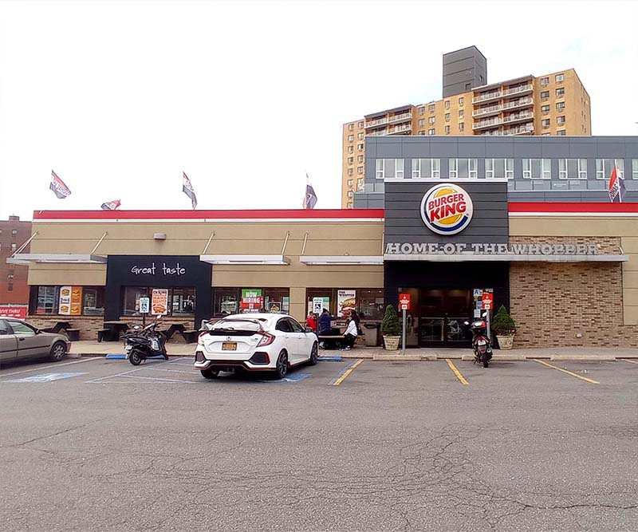
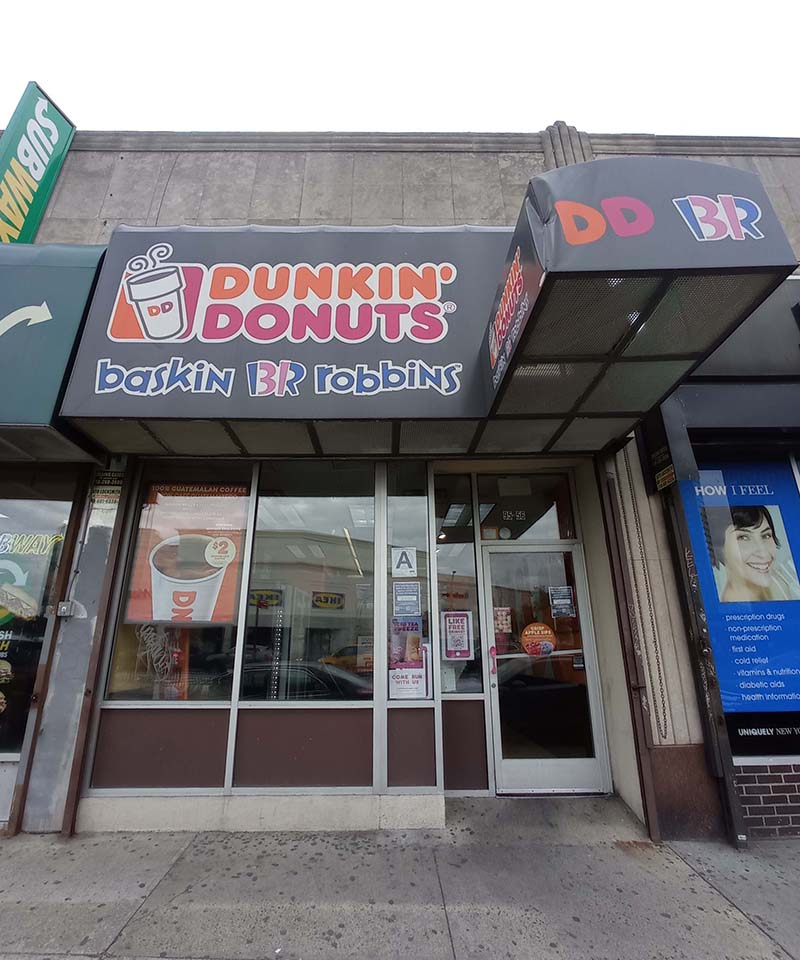
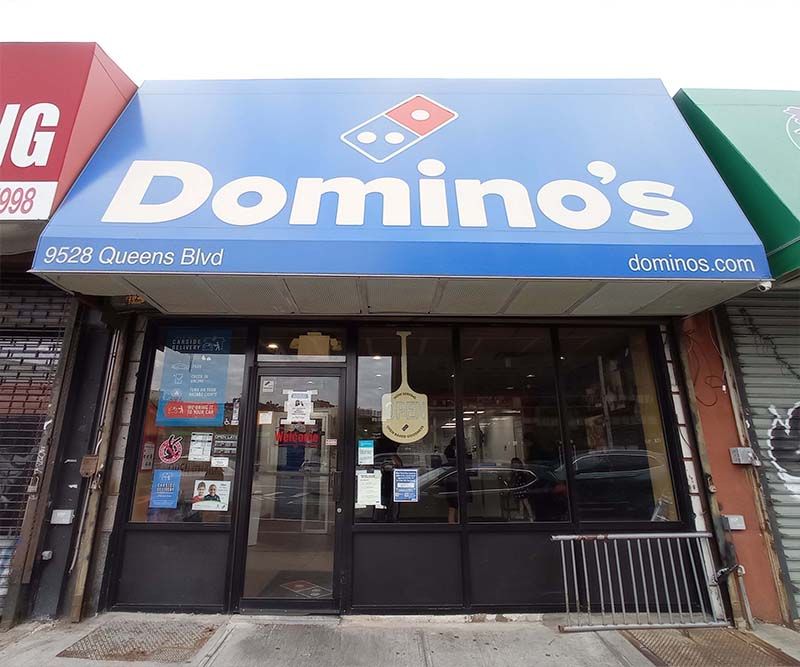
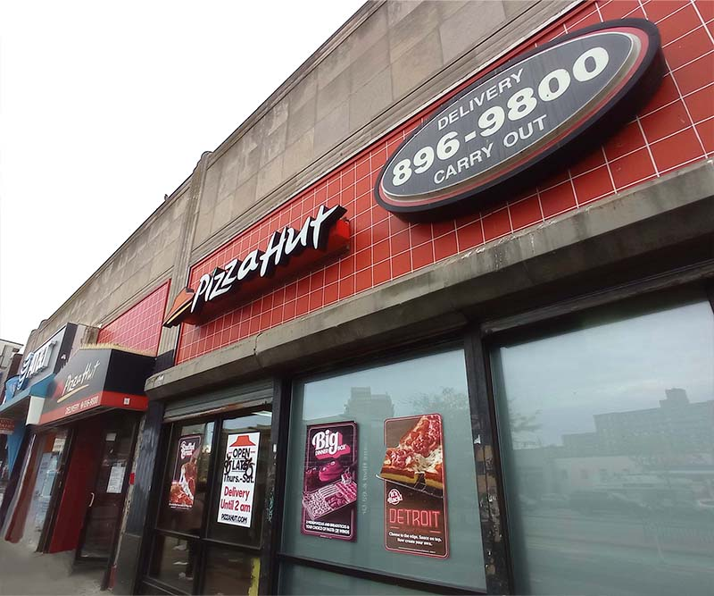
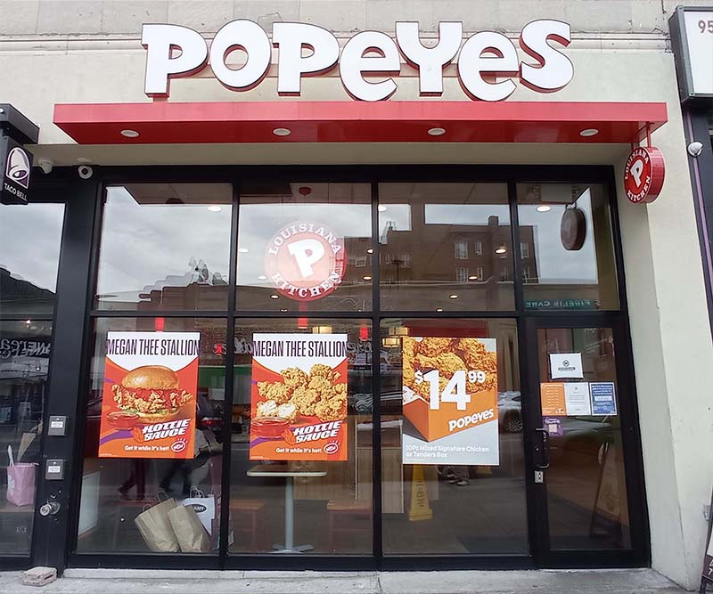
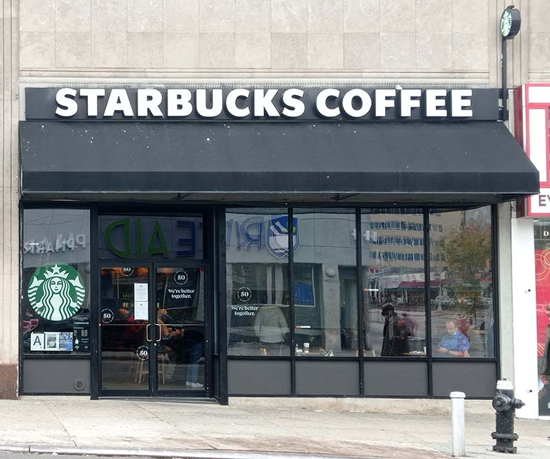
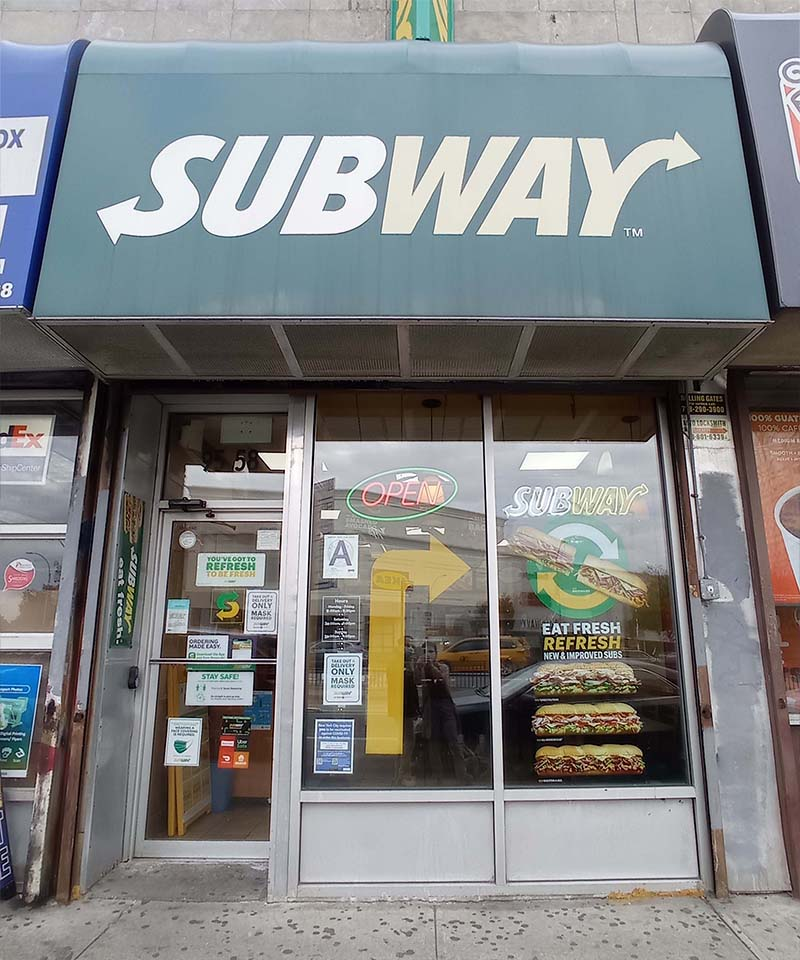
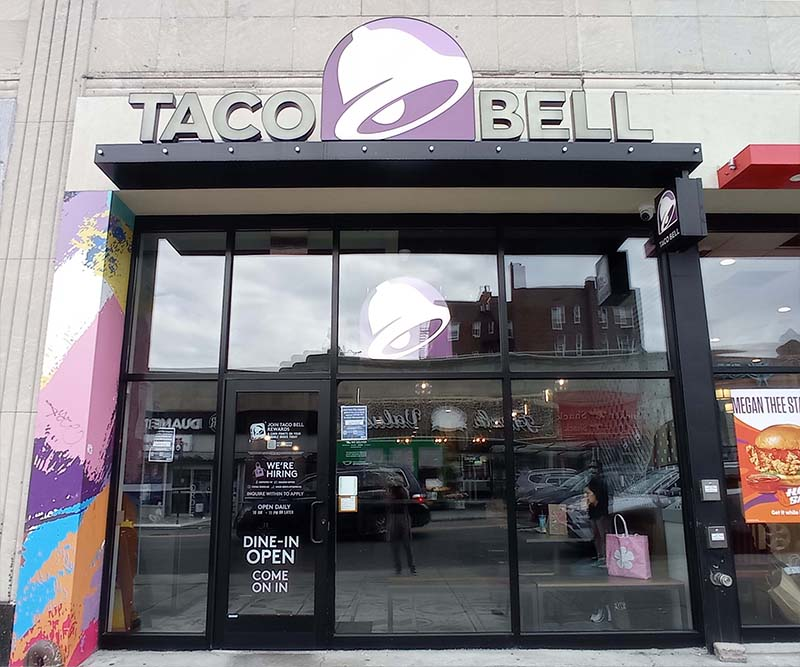

Fast-Food Chains

Burger King
Number of Outlets in Rego Park: 1Address: 92-85 Queens Blvd, Queens, NY 11374
Website: burgerking.com
Call: (718) 575-0116
Dunkin Donuts
Number of Outlets in Rego Park: 3Address: 95-56 Queens Blvd, Queens, NY 11374
Website: locations.dunkindonuts.com
Call: (718) 459-1872
Address: 9637 Queens Blvd, Queens, NY 11374
Website: locations.dunkindonuts.com
Call: (718) 275-2949
Address: 6365 Woodhaven Blvd, Queens, NY 11374
Website: locations.dunkindonuts.com
Call: (718) 396-0178


Domino's
Number of Outlets in Rego Park: 1Address: 9528 Queens Blvd, Queens, NY 11374
Website: dominos.com
Call: (718) 896-1717
Pizza Hut
Number of Outlets in Rego Park: 1Address: 9608 Queens Blvd, Queens, NY 11374
Website: locations.pizzahut.com
Call: (718) 896-9800


Popeyes
Number of Outlets in Rego Park: 1Address: 9506 63rd Dr, Queens, NY 11374
Website: locations.popeyes.com
Call: (718) 255-1713
Starbucks
Number of Outlets in Rego Park: 2Address: 95-17 63rd Dr, Queens, NY 11374
Website: locations.starbucks.com
Call: (347) 757-0261
Address: 92-77 Queens Blvd, Queens, NY 11374
Website: locations.starbucks.com
Call: (347) 997-2496


Subway
Number of Outlets in Rego Park: 2Address: 95-58 Queens Blvd, Queens, NY 11374
Website: locations.subway.com
Call: (718) 897-1727
Address: 61-01 Junction Blvd, Queens, NY 11374
Website: locations.subway.com
Call: (718) 271-2001
Taco Bell
Number of Outlets in Rego Park: 1Address: 9506 63rd Dr, Queens, NY 11374
Website: locations.tacobell.com
Call: (929) 487-1150


Wendy's
Number of Outlets in Rego Park: 1Address: 90-13 Metropolitan Ave, Queens, NY 11374
Website: locations.wendys.com
Call: (718) 275-6221